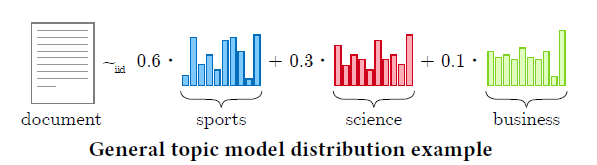

8.3 Tensors and Machine Learning
Where tensor factorizations show up in models.
These notes walk through the lecture slides. The original deck is unchanged; use (slides) on the course hub if you want that PDF.
Figures and notes follow Introduction to Tensor Decompositions and their Applications in Machine Learning.
1. Tensors and machine learning
Data. Tensors are the natural array for images, video, and time series. Those types are common in ML; a tensor is an efficient way to hold them.
Parameters. Neural nets (and others) are parameterized by tensors. Weights and biases are tensors; training and inference are tensor arithmetic.
Decompositions. Dimension reduction, feature extraction, interpretation. Lower-dimensional factors can expose latent structure: clustering, anomaly detection, recommenders.
Tensor algorithms. Some methods are built for tensor data: collaborative filtering, multi-relational analysis, latent-variable models.
2. Temporal data
A third mode is a simple way to add time to a matrix relation (user preferences, a graph adjacency).
As SVD and NMF do for matrices, a decomposition of a temporal tensor finds latent structure. Typical jobs: discover patterns, predict how they evolve, spot anomalies.
Tensor methods can take a never-ending stream without needing an infinite time axis.
Time also constrains the array: you cannot permute that mode arbitrarily. Neighboring slices are related.
3. Multi-relational data
Tensors fit multi-relational data (social networks as subject–relation–object triples). A multilayer network is the same idea: each slice is one relation.
Factorization then sees interdependencies on several levels at once. Uses in statistical relational learning: collective classification, word representations, community detection, coherent subgraphs.
Knowledge graphs (Google Knowledge Graph, YAGO, Microsoft Academic Graph) are multilayer networks of facts about entities. The analysis problem is to infer new relations from existing ones. Tensor decompositions are competitive here on quality and cost. Downstream: question answering, entity resolution.
4. Latent variable modeling
Over the last decade, tensor decompositions have been used for inference in latent-variable models: hidden Markov models, ICA, topic models.

A probabilistic model says how hidden variables generate observations. Inference: most probable hiddens given the data. Maximum likelihood is consistent and struggles in high dimension.
Tensor methods compute empirical moments (mean, variance, skewness) and look for latent configurations that reproduce those moments inside the model.
5. Current research directions
Two main questions at the tensors–ML intersection:
Formulate ML problems as tensor decompositions. Some problems already solve this way. Open: whether neural nets and other algorithms benefit too.
Weaker assumptions. Uniqueness conditions for decompositions are often weak; using them in ML is often strict. Example: GMM estimation may need the number of components no larger than the data dimension .
6. Software libraries
Most languages have multi-dimensional arrays. Tensor decompositions arrived later in applied CS; libraries are still concentrated on Matlab and Python.
Popular options (as of 2024):
| Library | Environment |
|---|---|
| TensorLy | Python |
| N-way Toolbox | Matlab |
| pytensor | Python |
| scikit-tensor | Python |
| SPLATT | C/C++, Octave, Matlab |
| rTensor | R |
| Tensor Toolbox | Matlab |
| Tensorlab | Matlab |
Practice
-
Why might a tensor factorization beat flattening the same data into a matrix?
-
In a knowledge graph stored as a tensor, what inference job are the factorizations used for?
-
Instead of maximum likelihood in high dimension, what does a tensor method match when it infers latent variables?